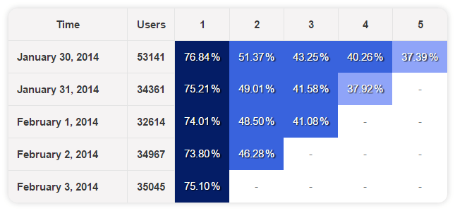

Cohorts are a good tool to review retention of users over a defined period of time.
To create your own cohort report, you’ll need to define your cohort time frame, population, and activeness of users.
Here is an example of a cohort query in PostgreSQL, step by step:
We used the WITH clause in this example - WITH clauses allow you to name a sub-query block, this way your query is modular (and sometimes runs faster), it can later be referred in the main query instead of making a large main query with many aliases, JOINs or other complexities. You can have multiple sub-queries, just be sure to have a comma between them.
Select the time frame you want to investigate (usually a between a week and a month)
WITH
time_frame AS (
SELECT CURRENT_DATE - 14
),
Define your population relative to the cohort date, for each following day
population AS (
SELECT created_at::date AS cohort_date, id AS unique_id
FROM users
WHERE created_at > (SELECT * FROM time_frame)
),
Define what’s an active user to you - what event interest you to examine
activity AS (
SELECT created_at::date AS activity_date, org_id AS unique_id, cohort_date
FROM events
JOIN population ON population.unique_id = org_id
WHERE created_at > (SELECT * FROM time_frame)
),
Aggregate your population by cohort date (day 1, day 2…)
population_agg AS (
SELECT cohort_date, COUNT(distinct unique_id) AS total
FROM population
GROUP BY 1
)
Write your query to show your population % by cohort dates
SELECT activity.cohort_date AS date,
date_part('day',age(activity_date, activity.cohort_date)) AS day_number,
COUNT(distinct unique_id) AS value,
total
FROM activity
JOIN population_agg ON activity.cohort_date = population_agg.cohort_date
GROUP BY 1, 2, 4
Add a cohort visualization to your query and you’re done!

This only works for daily cohort, but not for weekly or monthly.
Why? Say that a user did activities in 2 days in a week.
Using this cohort and weekly is chosen, that user will be counted as 2 whereas that user should be counted as 1.
After all it depends on how you define the calculation of the cohort. And this cohort feature in redash can’t support my definition for weekly or monthly cohort.
Your query needs to return weekly or monthly data for this to work. The visualization won’t recalculate the values when switching to weekly/monthly cohort (for the exact reason you mentioned).
Yes, i just had an idea if the bucket field only accepts date data type. I’ll use date_trunc function for weekly and monthly respectively. Will try soon.
Thanks!
Hi, I’m having trouble creating a monthly cohort chart. I copied the query and modified the variables based on my case and successfully created a daily cohort chart. When I changed it into a monthly timeframe, it is still displaying the cohort in a daily format.
In order to transform the data into a monthly one, I’d modify:
created_at::DATE – DATE_TRUNC('month', created_at)::DATE (in population CTE)
created_at::DATE – DATE_TRUNC('month', created_at)::DATE (in activity CTE)
DATE_PART('day', age(activity_date, activity_.cohort_date)) – DATE_PART('month', age(activity_date, activity_.cohort_date)) (in the last clause)
Can you please give me an example on how you would create a monthly cohort based on the current case?
Hi Arik, can I get a link to the data source you used for this. getting the dataset will enable me to understand the code very well. Or at least a snapshot of the first 10rows with the columns